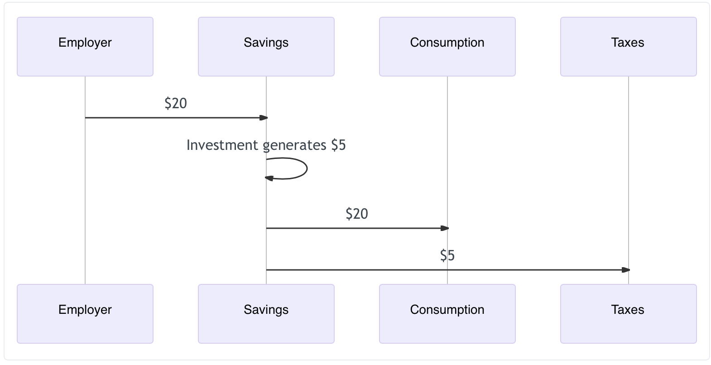

Progressive Consumption Tax
Mar 27, 2022 17:15 · 1689 words · 8 minute read
Taxes create incentives. When the government tax an activity, society does less of it. Tax alcohol, people drink less. Tax smoking, people smoke less. Tax income, people work less. Tax investment, people invest less. I’m going to take this as given for now, even though there are many caveats on all of these statements.
This suggests a simple principle for crafting a tax code: tax the things we want less of, and don’t tax the things we want more of. There are two practical challenges to this approach:
- The government also needs to raise a certain amount of revenue to finance its spending, which adds an additional constraint.
- Many of the things we want less of are society-wide (smoking, drinking, etc.), and many of the things we want more of (income, investment, etc.) are very unequally distributed to the people who can most afford the tax burden (wealthy individuals).
These challenges make it difficult to just tax the things we want less of, because a tax large enough to raise the required revenue would also be a huge burden on many of those who can least afford it.
There is a way out though! We could tax the things we want less of, but do so in a progressive way, so that the tax burden falls more heavily on those who can better afford it.
How might this work?
Consumption Taxes
Consumption taxes are taxes on goods and services that people consume. Think VAT or sales tax.
Is consumption something we want less of? At first glance the answer is no: consumption is where economic value is realized. Consumers want goods and services, they purchase them, and that generally makes them better off.
But suppose consumers aren’t rational agents. Maybe they consume more than is good for them, so taxing consumption is beneficial? There’s a good case to be made here: people exhibit hyperbolic discounting, which roughly means that they are not consistent in how much they are willing to delay gratification across different intervals. The net result is that people tend to discount their own futures much more than their stated preferences might suggest.
I’ll take as a given that people would be better off if they saved more and consumed less. Additionally, because savings are generally invested, higher savings rates mean higher investment rates, which increases the availability of capital, speeds growth, and generally makes society-writ-large better off. Again there are many caveats on all of these statements, but I’ll follow Tyler Cowen in Stubborn Attachments and take greater growth and prosperity to generally be a good thing.
So maybe it’s good to tax consumption. Given that many other taxes have negative effects, can we tax consumption enough to eliminate other taxes? For instance it’d be nice to eliminate taxes on income (which discourage working) and on capital gains (which discourage investment). Can we do that?
Why make consumption taxes progressive?
The problem with flat consumption taxes is that the tax rates have to be high to raise much revenue. For instance, the UK imposes a VAT of 20%, which suffices to raise about 15% of their revenue. So even if the VAT had no impact on consumption, we’d have to raise the tax to nearly 140% raise all of the UK’s tax revenue! If you factor in the effects of this VAT on consumption the situation gets worse, because the rate has to rise even higher if people consume less.
On the other hand, not all consumption in the UK gets taxes. VAT doesn’t apply to rent, to home purchases, most groceries, airplanes, education services, private medical treatment, and so on. Private consumption in the UK in 2021 was 63% of GDP and government revenue is typically ~25% of GDP, so VAT brings in ~4% of GDP, giving an effective rate spread over all consumption of 4/63 $\approx$ 6%. So if the UK taxed all consumption, and again neglecting the reduction in consumption that would follow, it could raise its full tax revenue with a flat ~40% consumption tax. Again accounting for the effects of this VAT on consumption means the rate has to rise higher if people consume less.
The precise numbers will vary by country, but I expect the UK to be pretty representative of rich countries.
A flat 40+% consumption tax would mean a big lifestyle change for most people, even if all other taxes were eliminated. In general the tax burden would shift heavily from the top ~5% of households by income (who currently pay ~60% of all income tax) to people earning much less, both because the current tax code is strongly progressive and because wealthier people consume a smaller fraction of their income.
What would a progressive consumption tax look like?
The challenge with making a consumption tax progressive is that it’s hard to avoid incentivizing workarounds. For instance say my consumption tax rate is 10%, and yours is 5%. I might ask you to go to the store to buy something for me and offer to split the tax savings.
One way around it is by regulating bank accounts. Essentially all money passes through a bank account at some point, and the bigger the amounts involved the more likely the transaction is to involve a bank. This makes banking regulation a promising way to implement a progressive consumption tax.
Implementation
In the system I’m proposing, every bank account is either a Consumption account or a Savings account:
- A Consumption account incurs a tax on all money deposited in it, at your personalized consumption tax rate, but is otherwise just like a regular checking account. You can freely withdraw money from it, and that money is withdrawn tax-free.
- A Savings account is tax free, and can hold not just money but also investments (stocks, bonds, options, etc.). Activity within a Savings account incurs no taxes, but there is a restriction: money withdrawn from a Savings account must be deposited into a Consumption account.
So for instance:
- My employer pays me $20.
- I have that direct deposited into a Savings account and no income taxes are incurred.
- The money is invested and grows tax-free, so that a year later I have $25.
- I decide I want to get takeout, so I transfer \$20 from my Savings account to my Consumption account. In this moment a consumption tax is incurred at my personal rate. which might be 25%=\$5, and that $5 tax is automatically deducted from my Savings account.
- I use the $20 in my Consumption account to pay for takeout.
The beauty of this system is that I can’t pay someone else to hide my consumption, it’s all centralized in bank accounts which are easy to monitor.
How do rates vary?
Each year each person/household faces a progressive consumption tax for that year’s consumption. So for instance the first $20k of consumption might face a rate of 0%, then the next \$10k could be taxed at 5%, then the next \$10k at 10%, etc. The point is to have the rate rise with increasing annual consumption.
Note that rates can go as high as needed for heavy consumers. Families consuming a million dollars a year might face rates of several hundred percent. Unlike income taxes, there is nothing intrinsically problematic with a consumption tax over 100%.
An alternative to evaluating rates based on annual consumption is to use lifetime consumption, but this runs into several practical challenges:
- Part of the premise of shifting to consumption taxes is that people discount the future too much. But this means that people are unlikely to forgo consumption in the present just because this raises their tax rates in the distant future.
- Lifetime consumption taxes interact with the immigration system in unfortunate ways, providing an effective tax break to immigrants (whose pre-immigration consumption is unknown and so not counted) and providing a heavy tax incentive to emigrate later in life to escape consumption taxes.
How does this interact with inheritance/cash gifts?
Inheritance fits easily into this system: both Consumption and Savings accounts can be passed on directly to beneficiaries, with no further tax implications. The contents of the Savings account will eventually be taxed when the beneficiaries spend them, and they can be taxed at the beneficiary’s rate. The contents of the Consumption account have already been taxed, and so incur no further taxes.
Gifts could work the same way: you can give a gift either from your Savings account to someone else’s, or from your Consumption account to someone else’s. In either case no tax is incurred, though when money received in a Savings account is spent it will be taxed, again at the beneficiary’s rate.
If it is desirable to impose an additional estate/gift tax, that can be done by forcing Savings accounts to be converted to Consumption accounts on death, and by forbidding direct gifts between Savings accounts. Conceptually, this amounts to taking the view that gifts are a form of consumption on the part of the giver (they consume the warm feeling of giving someone a gift), and so they pay a consumption tax on their gift. In that case the relevant rate would be the giver’s/deceased’s consumption tax rate.
Benefits
Beyond encouraging investment and income, this scheme has a number of other benefits, mostly in the form of fixing up incentive structures:
Capital Allocation
In the current capital gains tax scheme in the US there is a perverse incentive to avoid changing one’s capital allocation. Capital gains are taxed at the time they’re realized, so the tax code penalizes reallocating capital, which is clearly not desirable. By shifting the tax to time of consumption, a consumption tax eliminates these incentives around capital allocation.
Loans
Similarly, the current capital gains tax incentivizes taking out loans to finance consumption, as that allows one to defer realizing gains. The consumption tax scheme fixes that incentive: loans deposit money in your Consumption account, which doesn’t incur a tax then-and-there, but your repayment of the loan incurs taxes as you move money out of the tax-free account to repay it. This, combined with borrowing costs, makes a loan cost more than just realizing the gain